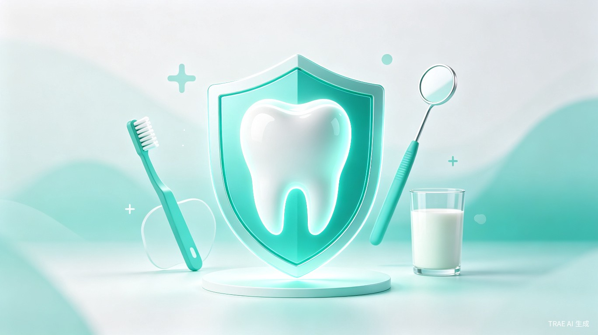
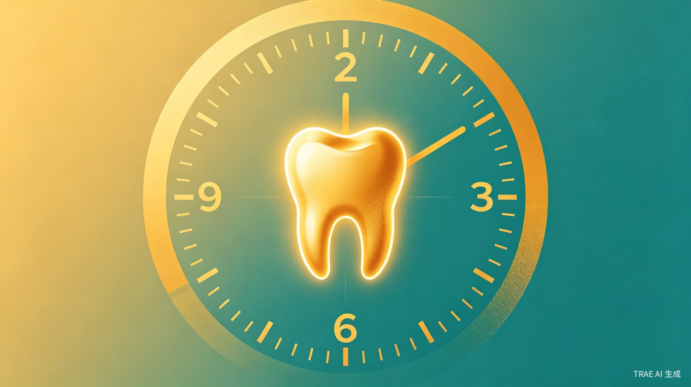
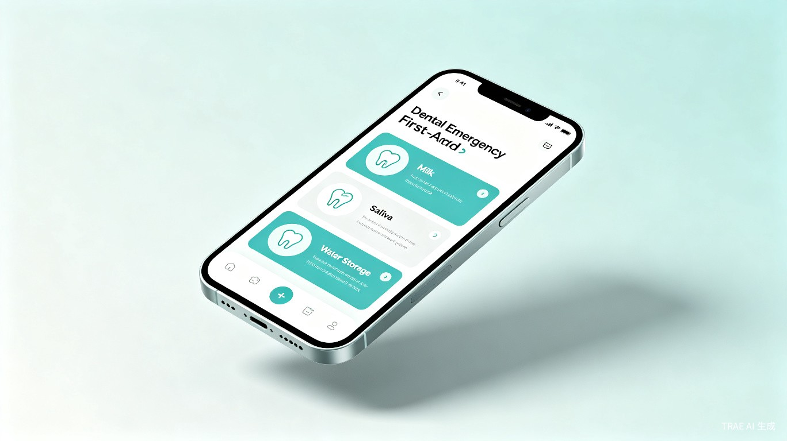

外伤脱位牙齿急救小程序 · 黄金两小时 · AI 智能救助
Contents · 演讲大纲
每年数百万颗牙齿因急救不当而永久丢失
AI 驱动的牙齿急救智能助手
一键识别伤情 · 黄金两小时倒计时 · 就医导航
千亿口腔市场中的蓝海赛道
专业口腔医学背景 + AI 技术赋能
Part 01 · 问题
一颗脱落的牙齿，两小时内决定生死
Problem · 数据触目惊心
全球牙外伤
每年因运动、跌倒、事故导致
正确处理率
不足一成的人知道正确急救方法
再植成功率
2小时内正确处理可高达90%
后续治疗费
种植牙单颗费用，且不可逆
Injury Types · 四种常见牙外伤
外力导致牙冠部分或完全断裂，可能伤及牙髓
牙周组织受损，牙齿出现异常晃动，需立即固定
外力将牙齿推入牙槽骨内，看似"消失"实则更危险
整颗牙齿脱出牙槽窝，最紧急的情况，需立即再植

Golden Hour · 黄金两小时
脱落的牙齿在干燥环境中，每分钟都在加速死亡。牙周膜细胞的存活率随时间急剧下降。正确的保存方式可以大幅延长细胞活性窗口。
Part 02 · 方案
AI 驱动的牙外伤急救智能助手
Features · 核心功能
上传牙齿照片，AI 自动判断折裂、松动、嵌入或脱落类型
AI 视觉识别根据伤情类型，推送个性化急救操作步骤，图文并茂
循证医学启动专属倒计时，实时提醒最佳就医时间窗口
紧急提醒LBS 定位周边口腔急诊，一键导航，不浪费一分钟
LBS + 导航
Product · 产品界面
紧急场景下，用户处于恐慌状态。界面设计遵循"三秒原则"——打开即用，无需注册、无需教程。大字体、高对比度、关键操作一步到位。
Comparison · 有无对比
Part 03 · 商业
千亿口腔市场中的蓝海赛道
Market · 市场规模
2025年预计突破4000亿元，年复合增长率超15%
覆盖运动人群、儿童青少年、户外工作者等高风险群体
目前国内尚无专门的牙外伤急救数字化产品
Business Model · 商业模式
为口腔急诊机构精准导流，按效果付费（CPA），单次导流佣金 50-200 元
核心收入与意外险/齿科险公司合作，嵌入保险理赔流程，获得 B 端收入
高毛利口腔急救课程、护牙产品电商、企业安全培训等增值服务
长尾收入Social Impact · 社会价值
每保住一颗原牙，可为患者节省 1-3 万元种植牙费用，同时避免骨量缺失带来的二次手术
填补国内牙外伤急救科普空白，让"黄金两小时"成为常识，惠及亿万家庭
牙齿缺失导致骨吸收、面部塌陷，尤其对青少年影响深远。保住原牙就是保住自信
Team · 团队优势
核心成员为口腔医学副教授，深耕口腔临床与教学多年，内容权威可靠
借助 Trade AI 平台能力，实现牙外伤图像智能识别与个性化急救方案推荐
国内首个牙外伤急救数字化产品，抢占品类心智，建立行业壁垒
Roadmap · 发展路线
完成微信小程序核心功能，上线 AI 伤情识别 + 急救指引 + 倒计时 + 导航
3 个月接入口腔急诊机构网络，上线导流系统，启动保险合作洽谈
6 个月开放 API 给校园/运动场馆/企业，推出齿科保险产品，构建牙外伤急救生态
12 个月Interactive Quiz · 互动测试
4 道题，测测您的急救常识
守护每一颗牙齿，从两小时开始